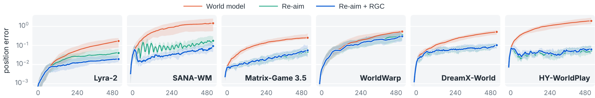

Interactive demo
Follow the camera
Drag the divider to compare outputs, or select a frame on the camera trajectory.
SANA-WM
Drag a path or use the arrow keys to change frames.
Marker timing is approximate; images show five keyframes.
- Start
- Current position
01 Method
Correct the next
camera command
After each generated chunk, we estimate the camera pose and use it to re-aim the next commands. The generator weights remain fixed.
-
Estimate the camera pose
A geometry model estimates camera poses from the generated frames. The estimates use a fixed scale calibrated from the first frame.
-
Re-aim the next chunk
We construct a path from the estimated pose to the planned pose at the end of the next chunk, then express its motion in the generator's assumed camera frame.
-
Compensate for overshoot
Rectified Gain Compensation (RGC) estimates the motion gain online and reduces command magnitude when the generator overshoots. Commands are never amplified.
02 Generated views
Compare the views
Drag the divider to compare each world model with Re-Aim + RGC. The inset shows the recorded view at the planned pose. The gallery includes a failure case.
03 Evaluation
Eight world models.
Two benchmarks.
We evaluate six models on 52 DL3DV scenes (480 frames) and two on 30 RealEstate10K clips (240 frames). Position error is measured without aligning the trajectory to the plan.
Selected DL3DV results: mean position error over 52 scenes, Re-Aim + RGC versus World model.
Results by model
Full results table
WorldScore image aspects were scored for World model and Re-Aim + RGC only. VMem uses pose memory updates rather than Re-Aim.
04 Rollout analysis
How drift builds
over time
The world model conditions each new chunk on the commanded pose, even when the generated camera has drifted. Re-Aim uses the measured pose to reduce the resulting accumulation of position error.

05 Simulation
Try the motion model
A 2D camera follows a planned path in 24-frame chunks. Adjust the motion gain, direction error, and measurement noise to compare World model, Re-Aim, and Re-Aim + RGC.
2D simulation; distances are normalized by the planned path length.
Mean distance from the plan
Distance from the plan per frame, log scale
Effect of motion gain
Re-aiming corrects the difference between the measured pose and the plan. When the motion gain exceeds one, the correction can overshoot and produce oscillation. In this simplified model, re-aiming becomes unstable above a gain of two.
RGC divides commands by an online gain estimate, bounded below by one. This reduces overshoot without increasing commands for models that move too little. On SANA-WM, RGC reduces the generated-to-planned path-length ratio from 5.6 to 1.5 and gives a further 2.5× reduction in position error.
BibTeX
Citation
Re-Aim
CVPR 2027 submission · Anonymous authors
@inproceedings{anonymous2027reaim,
title = {{Re-Aim}: Correcting Trajectory Drift
in Frozen Video World Models},
author = {Anonymous},
booktitle = {Under review},
year = {2027}
}